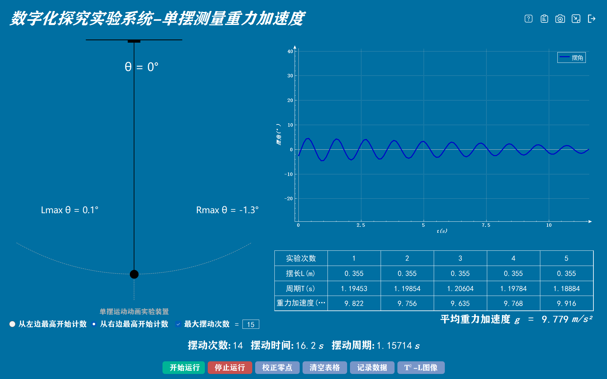

实验四十一 用单摆测量重力加速度的大小
【实验目的】
学会使用单摆测量重力加速度的方法。
【实验原理】
单摆的摆角很小时，摆球的运动可看作简谐运动，其运动周期只与摆长和当地的重力加速度有关，而与摆球的质量无关。由单摆作简谐运动的周期公式T=2π，可得g=4π2L/T2 ，只要测量出单摆的摆长和周期，即可代入公式计算出当地的重力加速度。
【实验器材】
数据采集器、计算机、单摆实验器、二维单摆接收器。
【实验装置】

【实验操作步骤】
1.搭建实验环境，将单摆实验装置固定到铁架台上和将无线接收模块插入电脑USB接口，转动摆球使摆球上的小凸起正对我们；
2.打开二维单摆软件和长按摆球和无线接收模块上的小凸起打开单摆传感器和接收模块；
3.点击“校正零点”对传感器进行校对，设置“‘最大摆动次数’”为15，勾选“从右最高开始计时”。已知摆长为0.355，所以将所以摆长那一列全部设置为0.355；
4.将摆球拉起一个较小的角度（摆线与竖直方向所成的夹角在5°左右），点击“开始实验”并释放摆球，注意尽量不使摆球发生旋转。十五个周期后实验结束，点击“记录数据”，在弹出的窗口中输入1，记录第一组数据，同理完成剩下的四组实验。
5，实验结束，软件会自动计算平均重力加速度。平均重力加速度为：9.779m/s²;

单摆测量重力加速度实验数据
【思考与讨论】
本实验中你认为应该如何做才能减小实验误差，使测得的重力加速度值尽可能的接近当地实际重力加速度值？
【自由探究】
更换不同长度的摆线，重复进行实验，将每次实验测得的重力加速度值进行比较，分析产生差异的原因。